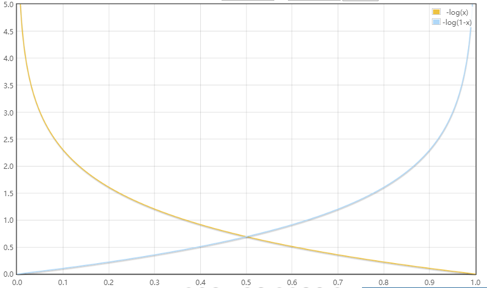

使用scikit-learn实现分类算法

在本节中，我们将会介绍常用分类算法的概念，以及如何使用 scikit-learn 机器学习库和选择机器学习算法时需要注意的问题。
分类算法的选择
机器学习算法涉及到的五个步骤可以描述如下：
- 特征的选择
- 确定性能评价标准
- 选择分类器及其优化算法
- 对模型性能的评估
- 算法的调优
在本节中集中学习不同分类算法的概念，并再次回顾特征选择，预处理及性能评价指标等内容。
初涉 scikit-learn 的使用
首先，使用 scikit-learn 来实现一个感知器模型，这个模型和前面讲的感知器模型类似。仍旧使用鸢尾花数据集中的两个特征。
提取150朵鸢尾花的花瓣长度和宽度两个特征的值，并且由此构建矩阵$ X $，同时将对应的类标赋值给$ y $：
1 | from sklearn import datasets |
为了评估训练得到的模型在位置数据上的表现，我们进一步将数据集划分为训练数据集和测试数据集：
1 | from sklearn.model_selection import train_test_split |
由此，我们得到45个测试样本和105个训练样本。为了优化性能，还需要对数据进行特征缩放：
1 | from sklearn.preprocessing import StandardScaler |
通过调用 sc.fit可以计算出X_train的每个特征的样本均值$ \mu $和标准差$ \sigma $。通过调用transform方法，可以使用已经计算出来的$ \mu $和$ \sigma $来对训练集数据做标准化处理。在特征缩放后，我们就可以训练感知器模型了：
1 | from sklearn.linear_model import Perceptron |
训练好后，就可以进行预测了：
1 | y_pred = ppn.predict(X_test_std) |
最终可以看到有5个预测错误，从而准确率是$ 89% $。同样地，scikit-learn还实现了许多不同 的性能矩阵，可以通过如下代码计算准确率：
1 | from sklearn.metrics import accuracy_score |
最后，我们可以在第二章中实现的plot_decision_regions函数来绘制刚刚训练过的决策区域，并且观察不同分类的效果，代码如下：
1 | from matplotlib.colors import ListedColormap |
接下来，就可以回值决策区域图了：
1 | X_combined_std = np.vstack((X_train_std, X_test_std)) |
绘图如下：

从图中我们发现无法通过一个线性的决策边界完美划分三类样本。对于无法完美线性可分的数据集，感知器算法将会永远无法收敛，这也是实践中一般不使用感知器算法的原因。
逻辑斯蒂回归中的类别概率
初识逻辑斯蒂回归模型
逻辑斯蒂回归模型和Adaline模型类似，不同的是在Adaline中，我们使用$ \phi(z)=z $作为激励函数，而在逻辑斯蒂回归中使用的是sigmoid函数作为激励模型：
$$
sigmoid(z) = \phi(z) = \frac{1}{1+e^{-z}}
$$
它的函数图像如下：
在给定特征$ x $和权重$ w $的情况下，sigmoid函数的输出值给出了特定样本$ x $属于类别1的概率$ \phi(z) = P(y=1|x;w) $。预测到的概率可以通过一个量化器进行二元输出：
$$
\hat{y}=\begin{cases}
1 & \phi(z) \ge 0.5\
0 & others
\end{cases}
$$
对应的，逻辑斯蒂回归模型图如下：
逻辑斯蒂回归模型的代价函数
在构建逻辑斯蒂回归模型时，需要先定义一个最大似然函数，公式如下:
$$
L(w) = \prod_{i=1}^{n}P(y^i|x^i;w)=(\phi(z^i))^{y^i}(1-\phi(z))^{1-y^i}
$$
然后取对数并且改写一下，得到如下：
$$
J(w) = \sum_i^n-y^ilog(\phi(z^i)) - (1-y^i)log(1-\phi(z^i))
$$
我们可以对单个样本实例进行成本分析：
$$
J(\phi(z),y;w) = \begin{cases}
-log(\phi(z)) & y=1\
-log(1-\phi(z)) & y=0
\end{cases}
$$

可以看到，如果正确将样本划分到类别1和0中，代价都将会趋于0，但是如果错误分类，代价将会区域无穷，这也就意味着错误预测带来的代价将会越来越大。
使用scikit-learn训练逻辑斯蒂回归模型
接下来，我们使用逻辑斯蒂回归模型来训练鸢尾花数据集：
1 | from sklearn.linear_model import LogisticRegression |
得到的决策区域图如下：

此外，可以通过predict_proba来预测样本属于某个类别的概率：
1 | lr.predict_proba(X_test_std[0:1, :]) |
此结果表示模型预测此样本属于类标1的概率是$ 6.1% $，属于类标2的概率是$ 93.9% $。
通过正则化解决过拟合问题
过拟合是机器学习中常见的问题，过拟合具有高方差，这可能是使用了较多的参数，使得模型过于复杂。同样地，模型也会面临着欠拟合问题，欠拟合具有高偏差，这意味着模型过于简单，使得我们在预测时性能不佳。
偏差-方差权衡（bias-variance tradeoff）就是通过正则化来调整模型的复杂度。正则化时解决共线性（特征间高度相关）的一个很有用的方法，最常用的正则化形式是L2正则化，可以写作：
$$
\frac{\lambda}{2}||w||^2=\frac{\lambda}{2}\sum_{j=1}^m w_j^2
$$
其中，$ \lambda $是正则化系数。
特征缩放之所以很重要，其中一个原因是正则化。为了使得正则化起作用，需要确保所有特征的衡量标准保持统一。
使用正则化方法时，我们只需要在逻辑斯蒂回归的代价函数中加入正则化项，以降低系数带来的副作用：
$$
J(w) = \left(\sum_i^n-y^ilog(\phi(z^i)) - (1-y^i)log(1-\phi(z^i))\right)+\frac{\lambda}{2}||w||^2
$$
前面用到的scikit-learn中的LogisticRegression类，其中的参数C时正则化系数的倒数：
$$
C = \frac{1}{\lambda}
$$
使用支持向量机最大化分类间隔
另外一种性能强大且广泛应用的学习算法时支持向量机（SVM），它可以看作是对感知器的扩展。在SVM中，我们的目标是最大化分类间隔。在此处间隔指的是两个分离的决策边界间的距离，而最靠近决策边界的训练样本称作是支持向量：
对分类间隔最大化的直观认识
我们将平面分为正平面和负平面，对于正平面来说：
$$
w_0+w^TX_{pos}=1
$$
对于负平面：
$$
w_0+w^TX_{neg}=-1
$$
对以上两式，相减得
$$
w^T(X_{pos}-X_{neg})=2
$$
定义$ ||w|| = \sqrt{\sum_{j=1}^{m}w_j^2} $，于是可得到如下等式：
$$
\frac{w^T(X_{pos}-X_{neg})}{||w||}=\frac{2}{||w||}
$$
上述等式的左侧可以解释为正负平面间的距离，也就是我们要最大化的距离。在样本正确分类的前提下，最大化分类间隔就是$ \frac{2}{||w||} $最大化，这也是SVM的目标函数，记作：
$$
w_0+w^Tx^i \ge 1, if\ y^i=1\
w_0+w^Tx^i \lt -1, if\ y^i=-1
$$
这两个方程可以解释为：所有的负样本都落在负超平面一侧，所有的正样本都落在正超平面一侧划分的区域中。实践中，使用二次规划方法很容易求出$ \frac{||w||}{2} $的最小值。
使用松弛变量解决非线性可分问题
引入松弛变量$ \xi $的目的是：放松线性约束条件，以保证在适当的惩罚项样本下，对错误分类的情况进行优化时能够收敛。
取值为正的松弛变量可以简单的加到线性约束条件中：
$$
w^Tx^i \ge 1, if\ y^i=1 - \xi^i\
w^Tx^i \lt -1, if\ y^i=-1 + \xi^i
$$
由此，新的优化目标为
$$
\frac{||w||}{2}+C(\sum_i\xi^i)
$$
通过变量C，我们可以控制对错误分类的惩罚程度，进而在偏差和方差之间取得平衡。
使用scikit-learn实现SVM
接下来，我们使用SVM模型来对鸢尾花数据集中的样本进行分类：
1 | from sklearn.svm import SVC |
得到图像如下：

在实际的分类任务中，线性逻辑斯蒂回归和支持向量机往往得到相似的结果。但是逻辑斯蒂回归比SVM更容易处理离群点，而SVM更关注接近决策边界的点。
在有些数据集很大的时候，可以使用scikit-learn提供的SGDClassifier类供用户选择，这个流泪还提供了partial-fit方法支持在线学习。SGDClassifier类的概念类似于随机梯度算法。
我们可以使用以下方式分别构建基于随机梯度下降的感知器，逻辑斯蒂回归以及支持向量机模型。
1 | from sklearn.linear_model import SGDClassifier |
使用核SVM解决非线性问题
SVM受欢迎的一个原因是：通过“核技巧”可以很容易解决非线性可分问题。
首先来了解非线性可分问题到底是什么。通过NumPy的logicol_xor来创建数据集，其中100个样本属于类别1，另外的100个样本属于类别-1：
1 | np.random.seed(0) |
执行以上代码后，我们得到了一个“异或”数据集，二维分布如下：

显然，使用前面提到的线性逻辑斯蒂回归或者是线性SVM模型，都无法将样本正确划分为正类别和负类别。
核方法的基本思想是：通过映射函数$ \phi(\cdot) $将样本的原始特征映射到一个使样本线性可分的更高维的空间中，然后找到分界面后作反变换$ \phi^{-1}(\cdot) $可得到最初的划分平面。
但是这种映射会带来非常大的计算成本，这个时候我们就可以使用核技巧的方法。在实践中，我们所需要做的就是将点积$ x^{iT}x^j $映射为$ \phi((x^i)^T \phi(x^j) $，为此定义
$$
k(x^i, x^j) = \phi((x^i)^T \phi(x^j)
$$
一个最常使用的核函数就是径向基核函数（RBF kernel）：
$$
k(x^i, x^j) = exp(-\frac{||x^i-x^j||^2}{2\sigma^2}) = exp(-\gamma ||x^i-x^j||^2)
$$
其中，$ \gamma = \frac{1}{2\sigma^2} $是待优化的自由参数。接下来，就使用scikit-learn来训练一个核SVM使之可以对“异或”数据集进行分类：
1 | svm = SVC(kernel='rbf', random_state=0, gamma=0.10, C=10.0) |
得到的决策边界如下：

正如图像所示，核SVM较好地完成了对“异或”数据的划分。
在此，我们将$ \gamma $参数设置为了0.1，可以将其理解为高斯球面的截止参数（cut-off parameter）。为了更好的理解$ \gamma $参数，我们将基于RBF的SVM应用于鸢尾花数据集：
1 | svm = SVC(kernel='rbf', random_state=0, gamma=0.20, C=10.0) |
得到的图像如下：

现在改变$ \gamma = 5.0 $，得到的图像如下：

通过图像可以看出，使用一个较大的$ \gamma $值，会使得类别0核类别1的决策边界变得紧凑了许多。
虽然模型对训练数据的你和很好，但是类似的分类器对未知数据会有较大的泛化误差。
决策树
基于训练集的特征，决策树模型通过一系列的问题来推断样本的类标。
从树根开始，基于可获得最大信息增益（Information Gain, IG）的特征来对数据进行划分，通过迭代处理，在每个节点重复此过程，直到叶子节点。
最大化信息增益—-获知尽可能准确的结果
就目前来说，大多数的库中实现的树算法都是二叉决策树。二叉决策树中常用的三个不纯度衡量标准或者划分标准分别是：基尼系数（Gini index, $ I_G $），熵（entropy， $ I_H $）以及误分类率（classification error， $ I_E $）。
非空类别熵的定义是
$$
I_H(t) = -\sum_{i=1}^c p(i|t)\log_2p(i|t)
$$
其中，$ p(i|t) $为在特定节点t中，属于类别i的样本占特定样本t中样本总数的比例。如果某一个节点中所有样本都属于同一个类别，那么它的熵是0，当样本以相同的比例分属于不同的类时，熵的值最大。
直观地说，基尼系数可以理解为降低误分类可能性的标准：
$$
I_G(t) = \sum_{i=1}^{c}p(i|t)(1-p(i|t)) = 1 - \sum_{i=1}^c p(i|t)^2
$$
和熵类似，当所有样本时等比例分布时，基尼系数的值最大。
误分类率的定义如下：
$$
I_E = 1 - max{p(i|t)}
$$
这是对于剪枝方法很有用的准则，但不建议用于决策树的构建过程，因为它对节点中各类别样本数量的变动不敏感。
构建决策树
通过使用scikit-learn来构建一颗二叉决策树，需要注意的是，决策树的深度不是越大越好，深度过大的决策树，很容易产生过拟合的现象。在此，构建一棵深度是3的决策树：
1 | from sklearn.tree import DecisionTreeClassifier |
得到的决策边界如下：

通过随机森林将弱分类器集成为强分类器
直观上，随机森林可以看作是多颗决策树的集成。随机森林算法可以概括为一下几个步骤：
- 使用bootstrap抽样方法随机选择 n 个样本用于训练（从训练集中随机可重复选择n个样本）
- 使用第 1 步选定的样本构建一棵决策树，节点划分如下：
- 不重复选择d个特征
- 根据目标函数的要求，使用选定的特征对节点进行划分
- 重复上述过程1~2000次
- 汇总每棵树的类标进行多数投票
使用scikit-learn来实现随机森林：
1 | from sklearn.ensemble import RandomForestClassifier |
得到的决策区域如下：

上述代码中，我们以熵作为不纯度衡量标准，且使用了10棵决策树进行随机森林的训练，同时我们还规定算法中使用的处理器内核数量为2。
惰性学习算法之k-近临算法
k-近临算法（k-nearest neighbor classifier，KNN）是惰性学习算法的典型例子。KNN算法本身是简单的，可以归纳为以下几步：
- 选择近临数量k和距离衡量方法
- 找到待分类样本的k个最近邻居
- 根据最近临的类标进行多数投票
下图说明了当k=3时，范围内红色三角形多，这个待分类点属于红色三角形；当K = 5 时，范围内蓝色正方形多，这个待分类点属于蓝色正方形。
KNN算法可以快速适应新的训练数据，不过它的缺点也是显而易见的，在最坏情况下，计算复杂度随着样本的增多而线性增长。
接下来使用scikit-learn实现KNN模型，在此，我们选择欧几里得距离作为度量标准：
1 | from sklearn.neighbors import KNeighborsClassifier |
得到的决策区域如下：

在代码中用到的“闵可夫斯基（minkowski）”距离是对欧几里得距离和曼哈顿距离的一种泛化，可写作：
$$
d(x^i, x^j) = \sqrt[p]{\sum_k|x^i_kx^j_k|^p}
$$
如果将参数p设置为2，那么就是欧几里得距离，设置为1，则为曼哈顿距离。